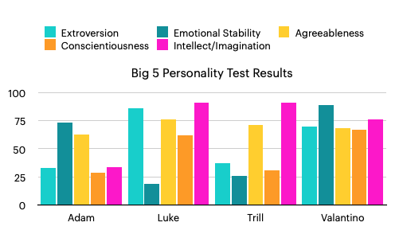
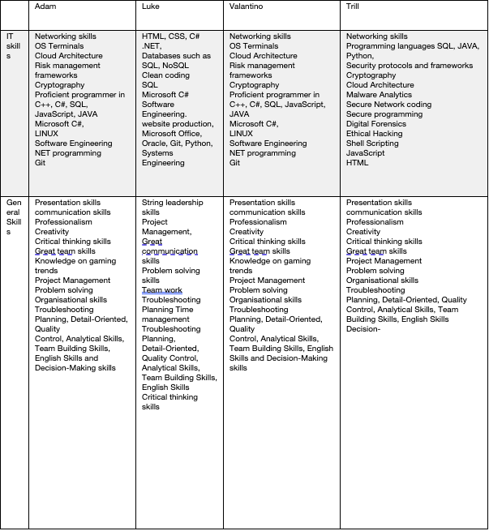
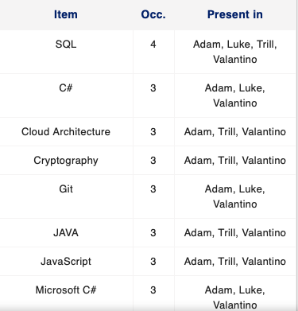
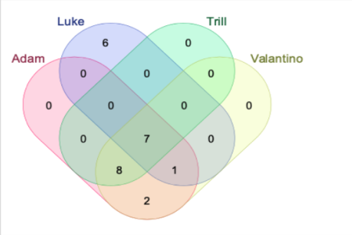
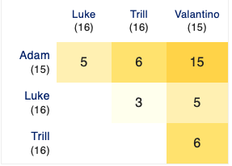
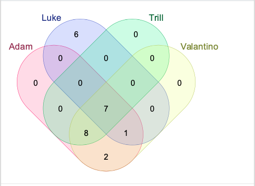
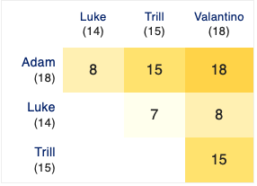
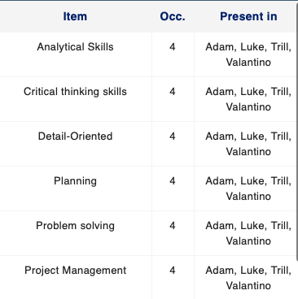

Adam Song
Student Number: s3918373
Student Email address: s3918373@student.rmit.edu.au
I am 18 years old from Brisbane, Queensland. My parents were both born in Australia, but my father’s parents were Chinese immigrants. Even though my grandmother still speaks Cantonese, I only speak English. I finished year 12 last year and was to travel overseas but this was stopped by COVID-19 restrictions. I enjoy gaming as a hobby and it’s also my work as a professional player. A lot of my friends are IT professionals, and it is through this I developed an interest in studying IT, as I feel it will be a good area for future work. My only experience in IT is the subjects that I did at school. I chose RMIT because of its open entry policy for the Bachelor of Information Technology, and because the course is online, I can do it from anywhere. I expect to learn about different networks, their design and administration, software development, website design and security. I am interested in using the course as a base for further study in computer science or cyber-security. I hope to find an area I really enjoy and develop skills to work in this area. Currently studies with group The Last of Us.
Trill
Student Number: 3910969
Student email: S3910969@rmit.edu.au
Trill is a part of the Group The Last of US and enjoys spending any free time reading, writing, coding and working on IT projects at home. A lot of the enthusiasm for IT and Computers began at a young age, when first learning alongside and encouraged by a father who loved to code and learn himself. First projects included tinkering with Raspberry Pis, learning many coding languages and finally grew into a fervent fascination with anything that had a hard drive. Having completed Year 12, gained excellent STAT scores and further tertiary education, Trill's next move is probably chasing down a degree that offers to solve truly interesting and challenging problems - whether that be in cyber security, software development or general IT.
Valantino
Student Number: s3915298
Student Email: s3915298@student.rmit.edu.au
Hello my name is Valantino and I am an aspiring game and web developer born in South Sudan then later migrated to Australia at the age of 6 and I’ve lived here ever since. I enjoy a lot of physical activity sports such as soccer dancing and boxing also enjoy non-physical activities like gaming editing and content creating. Why I have decided to choose the path of information technology is because when I was in high school, I noticed that I really enjoyed using and playing with tech and from that it led me to choose multimedia as one of my core subjects and from their learned to use software's like photoshop, after effects, adobe illustrator and Dreamweaver. Now I have decided to take the next step in my learning journey through RMIT. Currently studies with group The Last of Us.
Luke
Luke Adie, Student Number: s3782475, Email - S3782475@student.rmit.edu.au My name is Luke, I am currently studying IT at RMIT whilst working full time as part of a retail management team. Although I was born here, my Mum is from Turkey, where I get my cultural background from. My favourite hobby in my downtime is working on and driving cars! I currently own a 1994 Toyota Supra that I have rebuilt after being rear ended 2 months after getting the car. It has taken over a year, but it is now looking better than ever! I first got interested in IT from my love of gaming. I was a complete nerd and would play for hours on end with my brother, always challenging each other to be the best, however he would always come out on top due to the age difference. I have IT experience mainly from self-learning such as video editing, programming, game modifying and photo editing.
Comparison and Analysis of test results
As Adam writes, Information about a person’s personality and learning style helps students look at their strengths and how they respond in different settings. A ‘Myers-Briggs’ test (16 Personalities, n.d) gives answers rated into one of four different groups:
- Analysts (Intuitive and Thinking Personality types known for their rationality, impartiality, and intellectual excellence)
- Diplomats (Intuitive and Feeling personality types known for their empathy, diplomatic skills and passionate idealism)
- Sentinels (Observant and judging personality types known for their practicality and focus on order, security and stability)
- Explorers (Observant and prospecting personality types known for their spontaneity, ingenuity, and flexibility).
Trill reflected that there is a fair amount of overlap with 75% of the group being Introverted, Intuitive, Feeling and Judging. With this great combination of cross overs this could indicate that there is going to be a particularly good mix between the team and that everyone will be able to work each other efficiently and productively.
Adam is an Explorer who is an Adventurer – someone who is Introverted, Observant, Feeling and Prospecting. Adventurers tend to have open minds, approaching life, new experiences and people with grounded warmth. Their ability to stay in the moment helps them uncover exciting potentials.
Trill is an Architect. Architects are known for having a firmly logical grounded approach to anything they take on board (16Personalities, n.d). They are constantly problem solving, striving for answers – and they apply this to any area they work in. It doesn’t matter what their career ends up being they are invested in finding the most efficient way of achieving something – the cheapest way of creating something; etc. Forever learning and forever curious, an INTJ will always be inspired to learn and understand the world around them (16Personalities, n.d).
Through the Meyer-Briggs test, Luke have found that he was a “Protagonist”. This showed him that he was extraverted, intuitive, a feeler rather than a thinker, judging when it comes to his approach to work and turbulent. He has seen to be a “natural-born leader” – passionate and charismatic. Luke is an Auditory Learner. This means that I learn best by hearing and listening and can understand and remember things that I have heard.
Valantino is an Advocate. To paraphrase (16Personalities, n.d) , they leave their mark on the world. They have a deep sense of idealism and integrity, but they aren’t idle dreamers – they take concrete steps to realize their goals and make a lasting impact. Advocates’ unique combination of personality traits makes them complex and quite versatile. For example, Advocates can speak with great passion and conviction, especially when standing up for their ideals. At other times, however, they may choose to be soft-spoken and understated, preferring to keep the peace rather than challenge others. Advocates generally strive to do what’s right – and they want to help create a world where others do the right thing as well. People with this personality type may feel called to use their strengths – including creativity, imagination, and sensitivity – to uplift others and spread compassion. Concepts like egalitarianism and karma can mean a great deal to Advocates (16Personalities, n.d). Advocates may see helping others as their purpose in life. They are troubled by injustice, and they typically care more about altruism than personal gain. As a result, Advocates tend to step in when they see someone facing unfairness or hardship. Many people with this personality type also aspire to fix society’s deeper problems, in the hope that unfairness and hardship can become things of the past (16Personalities, n.d).
Big 5 Test Results
Each person had a look at their big 5 test results to see wether or not there was interesting similarities or differences in the results. It was important for everyone as a team to consider how their results might affect those around them working in a group and it was a compelling reason to start an honest discussion about the results and how they might affect people working in a team. The results were compiled into a table for ease of viewing:
As Adam wrote, the ‘Big 5 Personality Test’ is a psychological assessment that measures personality. The survey consists of 120 statements that asks people to respond to each statement on the scale of ‘strongly disagree’ to ‘strongly agree’. The answers are then grouped to score on five personality traits (van Thiel, 2021).
Adam has scored respectively Extroversion: 33, 73, 63, 29, and 34. As Adam writes, these results give me an idea of how I react to different situations and how I approach study and work and my behaviour in a team. Even though I am an introvert, I like new experiences. I am a visual learner, who prefers working alone. I am practical and good with technical problem-solving. While I do not want to be the leader of the team, I have an open mind and will listen to other people’s opinions. I am also practical and good with technical problem-solving. This means that even though I am quieter, I can listen to the group and offer solutions to problems. I can also remain calm in stressful situations, which is good when dealing with deadlines. When forming a team, it is important to have a mix of personalities to get the most out of everyone. To balance my personality, I need to have someone who can lead the team, and people who are comfortable working with others.
Luke has the following results Extroversion: 86, Emotional Stability: 19, Agreeableness: 76, Conscientiousness: 62 and Intellect/Imagination: 91.
Luke concludes that he is great with people, are easy to agree with, somewhat conscious about other people and intelligent, however has have poor emotional stability, which he can currently see in my personal relationships. Although he scored low, he is always trying to grow and learn more about himself as a person and am doing what he can to learn and make sure he do not make the same mistakes twice, especially when it comes to emotions and negative thought patterns. These results from the 3 different tests have shown me that he is a good leader, learn easier by hearing and seeing visuals and am extroverted when it comes to other people, however I can be emotionally unstable (on my own scale).
When forming a team, Luke concludes that it is a must that he can connect with other people – he is a social creature and loves being able to help and collaborate with peers to be able to create something amazing, rather than trying to tackle the whole task himself or watch his peers’ struggle. This is especially a must when gaining a leadership role, as he must be able to make sure my team’s wellbeing is a priority and that everyone is capable of the tasks delegated to them.
Luke concludes the results will influence my behaviour as a team in the following ways:
- I am great at leading in a team environment.
- I am compassionate about my teammates and colleagues and will make sure their wellbeing is top priority in a project (assist with delegation of tasks, keep track of how people are going with a project and how they are feeling - a happy worker is a productive worker).
- Can communicate effectively and are not shy to assist other people in a team environment – able to see where people may be struggling or achieving, giving me the ability to help people grow their weaker skills, but also delegate the correct tasks to the correct people.
- Can sometimes react too emotionally without first thinking – this would negatively impact the team as I may be unable to properly analyse my own feelings, rather than being able to remove my personal thoughts and think more critically. This is something I am aware of and constantly attempting to build upon, learning how to properly separate my feelings from a situation and not think clearly.
Trill is pleasantly surprised to see a lot of similarities between the data in her results as the results of the others around her and feels that this team might be a good match in terms of like-mindedness and even practises. Like-mindedness can be an important part of joining a new project as the dynamic between members may be harder to join later. However, with such similarities as conscientiousness, agreeableness and intelligence Trill feels like the group already has a mindset to tasks, responsibilities and practises in line with her own experiences and preferences.
Valantino scored as such: Extroversion: 70, Emotional Stability: 89, Agreeableness: 68, Conscientiousness: 67 and Intellect/Imagination: 76.
What kind of learners are we?
It is important when working in a group that most of the people can agree with the format being taught, as this might help group dynamic and aid in the process of remembering or understanding the materials that have to be covered by a certain date.
In the following we can see that a large number of our group are visual learners, which according to a report (Understanding Different Types of Learning Styles, n.d) is one of the most common type of learners, making up to 65% of the population. These types of learners learn best with something to read and often don’t do well with things they must remember from voice. They can still perform but they are much better when they are reading, seeing and with the use of visual aids.
Both Adam and Trill are visual learners, whereas Luke is an auditory learner, so would benefit from hearing rather than seeing. He would learn well enough in the group however because a lot of our meetings are based around sharing knowledge and planning experiences vocally rather than optically.
Group Process
How well did your group work together in Assignment 2? Will you be introducing any changes in process for Assignment 3? This is new for this assignment.
Career paths
Compare and contrast the career plans, including ideal jobs, for each person in the group. This may have changed due to feedback from Assignments 1 and 2. What common elements are there, if any? What differentiates each position from the others, if anything? How similar or different are your career plans across the group? This is new for this assignment.
Compare and Contrast career plans and ideal jobs, what common elements are there, if any?
The career plans can be broken down into ideally three parts, which involve obtaining the further education necessary for our ideal jobs, applying for these jobs after graduation, and finally, successfully starting a career in a field each member of the group is passionate about.
However it is important to note the differences in the education necessary for each job, and so plans have been broken into four parts.
When we analyse the career paths we can see that Adam and Valantino’s are very similar. They both wish to become game designers or director game designers - and as such have slightly different skills to the rest of the group.
Luke wished to become a Back end Developer although with reference to the Burning Glass job demand data during Assignment 2, found that both Back and Front end developers required similar skill sets, and that he could easily transfer between the two. This is advantageous for Luke as he can quickly meet demand from the market. His career path is different from Adam and Valantino’s because he would be required to spend more time on specific coding languages required by Back-end (JAVA, JavaScript, Python ) and Front end (HTML, CSS, JavaScript) development.
Trill wanted to work as a Security Consultant and although the data from the Burning Glass survey didn’t highlight this as a currently in demand area, it is still a career that requires many of the highly in demand skills. This is why Trill is going to continue pursuing a career in cyber security, and as such would involve more time on managing network and code security.
The skills required for each of our ideal jobs is listed below and with the use of some visual aides it is easy to see there is a broad overlap between careers regarding skillsets.
How similar or different are your career plans across the group?
The career plans for each person in the group can be seen to be very similar in terms of the process of gaining credentials and even the kind of education each person would be receiving. There is a strong similarity between Valantino and Adam’s career plans and skill sets, and even some similarities between Luke and Trills’.
With the visual aid of a Venn diagram we can see where some of the biggest overlaps lie:
As can be seen very quickly there is a huge overlap in the IT skills required by the group. Adam and Valantino overlap the most and then Trill overlaps the most with Valantino and Adam, and then finally with Luke. The language SQL is common amongst all four and C#, Cloud Architecture, Cryptography, Git, JAVA are close seconds with three people requiring them.
 Soft skills are even more similar, which suggests that our career paths are quite similar, if just by judging the skills required for each position.
Comparing and contrasting general, or ‘soft’ skills
As can be seen from the diagram if one of our group requires a skill set for their career is it incredibly likely that the rest of the group also needs that skill set.
As can be seen Adam and Valantino again shared most things in common having a 100% overlap - which can be expected because their career paths are near identical.
 Luke shares a fair amount with Adam and Valantino, with approx. a 50% overlap.
Trill has less than 50% overlap with Luke and around a 75% overlap with Adam and Valantino.
The biggest similarities and differences in the groups were the specific IT skills required by the career paths of each individual. Whereas Luke would focus on back/front end development, Adam and Valantino career’s involve time spent on learning the game tends and progressions; and Trill has very little overlap with either of these different career paths as she would spend more time in networking security.
However by and large the skill sets required are very very similar.